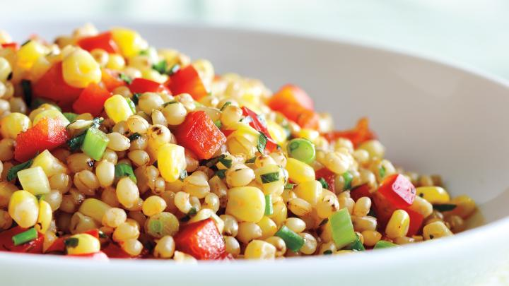

Salade de maïs, poivrons et courgettes
Une bonne Salade de grains de blé avec maïs et du poivron rouge
INGRÉDIENTS
Du maïs, une courgette, des oignon rouge, du poivron rouge, des fèves écossées, de huile d'olive, du citron, du sel et du poivre.
PRÉPARATION
À déguster directement !
TEMPS DE PRÉPARATION:
15 min